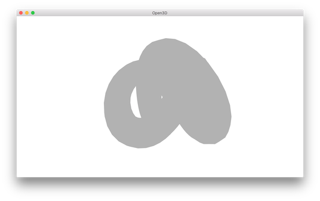
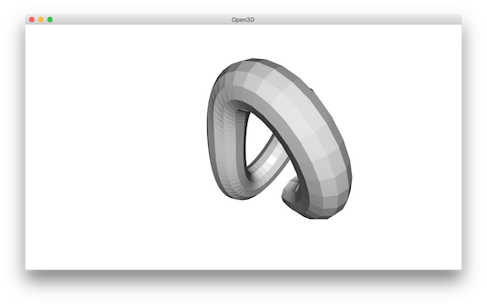

Mesh¶
Open3D has a data structure for triangle mesh.
5 6 7 8 9 10 11 12 13 14 15 16 17 18 19 20 21 22 23 24 25 26 27 28 29 30 31 32 33 34 35 36 37 38 39 40 41 42 43 | # examples/Python/Basic/mesh.py
import copy
import numpy as np
import open3d as o3d
if __name__ == "__main__":
print("Testing mesh in open3d ...")
mesh = o3d.io.read_triangle_mesh("../../TestData/knot.ply")
print(mesh)
print(np.asarray(mesh.vertices))
print(np.asarray(mesh.triangles))
print("")
print("Try to render a mesh with normals (exist: " +
str(mesh.has_vertex_normals()) + ") and colors (exist: " +
str(mesh.has_vertex_colors()) + ")")
o3d.visualization.draw_geometries([mesh])
print("A mesh with no normals and no colors does not seem good.")
print("Computing normal and rendering it.")
mesh.compute_vertex_normals()
print(np.asarray(mesh.triangle_normals))
o3d.visualization.draw_geometries([mesh])
print("We make a partial mesh of only the first half triangles.")
mesh1 = copy.deepcopy(mesh)
mesh1.triangles = o3d.utility.Vector3iVector(
np.asarray(mesh1.triangles)[:len(mesh1.triangles) // 2, :])
mesh1.triangle_normals = o3d.utility.Vector3dVector(
np.asarray(mesh1.triangle_normals)[:len(mesh1.triangle_normals) //
2, :])
print(mesh1.triangles)
o3d.visualization.draw_geometries([mesh1])
print("Painting the mesh")
mesh1.paint_uniform_color([1, 0.706, 0])
o3d.visualization.draw_geometries([mesh1])
|
Print vertices and triangles¶
13 14 15 16 17 18 | print("Testing mesh in open3d ...")
mesh = o3d.io.read_triangle_mesh("../../TestData/knot.ply")
print(mesh)
print(np.asarray(mesh.vertices))
print(np.asarray(mesh.triangles))
print("")
|
Outputs:
TriangleMesh with 1440 points and 2880 triangles.
[[ 4.51268387 28.68865967 -76.55680847]
[ 7.63622284 35.52046967 -69.78063965]
[ 6.21986008 44.22465134 -64.82303619]
...,
[-22.12651634 31.28466606 -87.37570953]
[-13.91188431 25.4865818 -86.25827026]
[ -5.27768707 23.36245346 -81.43279266]]
[[ 0 12 13]
[ 0 13 1]
[ 1 13 14]
...,
[1438 11 1439]
[1439 11 0]
[1439 0 1428]]
The TriangleMesh class has a few data fields such as vertices and triangles. Open3D provides direct memory access to these fields via numpy array.
Visualize 3D mesh¶
20 21 22 23 24 | print("Try to render a mesh with normals (exist: " +
str(mesh.has_vertex_normals()) + ") and colors (exist: " +
str(mesh.has_vertex_colors()) + ")")
o3d.visualization.draw_geometries([mesh])
print("A mesh with no normals and no colors does not seem good.")
|
The GUI visualizes a mesh.
{kind=link}
You can rotate and move the mesh but it is painted with uniform gray color and does not look “3d”. The reason is that the current mesh does not have normals for vertices or faces. So uniform color shading is used instead of a more sophisticated Phong shading.
Surface normal estimation¶
Let’s draw the mesh with surface normal.
26 27 28 29 | print("Computing normal and rendering it.")
mesh.compute_vertex_normals()
print(np.asarray(mesh.triangle_normals))
o3d.visualization.draw_geometries([mesh])
|
It uses compute_vertex_normals and paint_uniform_color which are member functions of mesh.
Now it looks like:
{kind=link}
Crop mesh¶
We remove half of the surface by directly operate on the triangle and triangle_normals data fields of the mesh. This is done via numpy array.
31 32 33 34 35 36 37 38 39 | print("We make a partial mesh of only the first half triangles.")
mesh1 = copy.deepcopy(mesh)
mesh1.triangles = o3d.utility.Vector3iVector(
np.asarray(mesh1.triangles)[:len(mesh1.triangles) // 2, :])
mesh1.triangle_normals = o3d.utility.Vector3dVector(
np.asarray(mesh1.triangle_normals)[:len(mesh1.triangle_normals) //
2, :])
print(mesh1.triangles)
o3d.visualization.draw_geometries([mesh1])
|
Outputs:
{kind=link}
{kind=link}